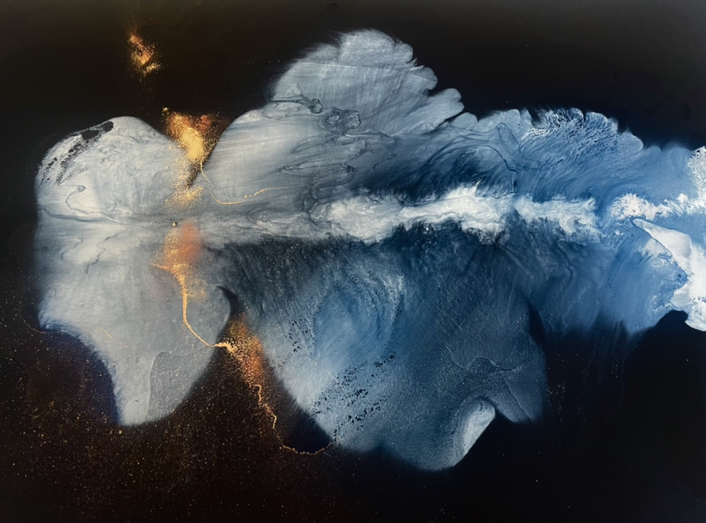
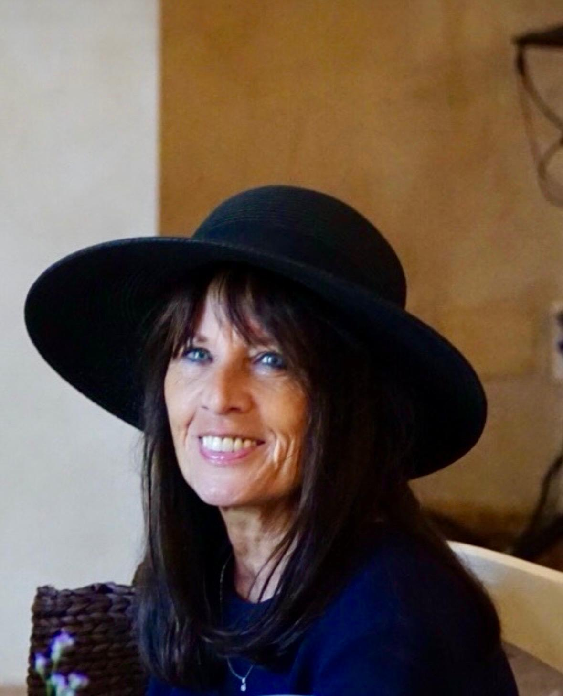

Les œuvres seront affichées ici.

Marie Hercberg est une artiste peintre dont l'œuvre se situe à la frontière entre figuration et abstraction, dans une quête permanente de lumière et d'absolu. Le noir et le blanc dominent son travail, où chaque geste devient une méditation sur l'essence même de la peinture.
Nourrie par l'enseignement de Zao Wou Ki et dans la lignée de Pierre Soulages ou Jean Degottex, elle développe une voie profondément personnelle. Son travail à l'huile sur papier révèle une approche singulière où la matière picturale oscille entre préméditation et hasard, entre maîtrise et abandon. La transparence, concept central de son œuvre, devient une métaphore de sa philosophie artistique : suggérer l'invisible, révéler ce qui se cache sous la surface.
Ses œuvres sont présentes dans des collections publiques, notamment au Musée Joseph Déchelette de Roanne. Elle a travaillé avec des pigments venus de Marrakech, témoignant d'une volonté d'aller au-delà des frontières artistiques et culturelles pour créer une peinture universelle.
« Marie guette ce moment où la vie surgit du néant, où le noir fait saigner le blanc, où des forces restées secrètes percent des profondeurs pour pénétrer le fond de l'œil… »
Zeev Gourarier, Directeur Scientifique et Culturel du MUCEM, Marseille
« Je connais l'œuvre de Marie, sa finesse et sa force me parle, c'est fluide et puissant comme un torrent de montagne qui aurait été enfanté par une aurore boréale. »
Jean-Marc Rochette, peintre, illustrateur, auteur
« C'est fin, subtil, intelligent. Ce travail de suggestion de fleurs comme des mélodies transparentes sur des papiers blancs… »
CharlElie Couture, artiste pluridisciplinaire
« Marie ne peint pas pour plaire, ou pour séduire… Marie peint parce qu'elle doit peindre, parce que ça doit sortir, sans compromission aucune. »
Wado (Dominik Wauthy), peintre
« C'est beau et silencieux, les huiles sur papier sont d'une infinie subtilité. Toute l'œuvre s'enracine dans une sorte d'esthétique du blanc. »
Gérard Gamand, rédacteur en chef, AZART
« Ta peinture nous élève. D'une certaine manière, je dirais qu'elle prie pour nous. »
Christian Chavassieux, écrivain